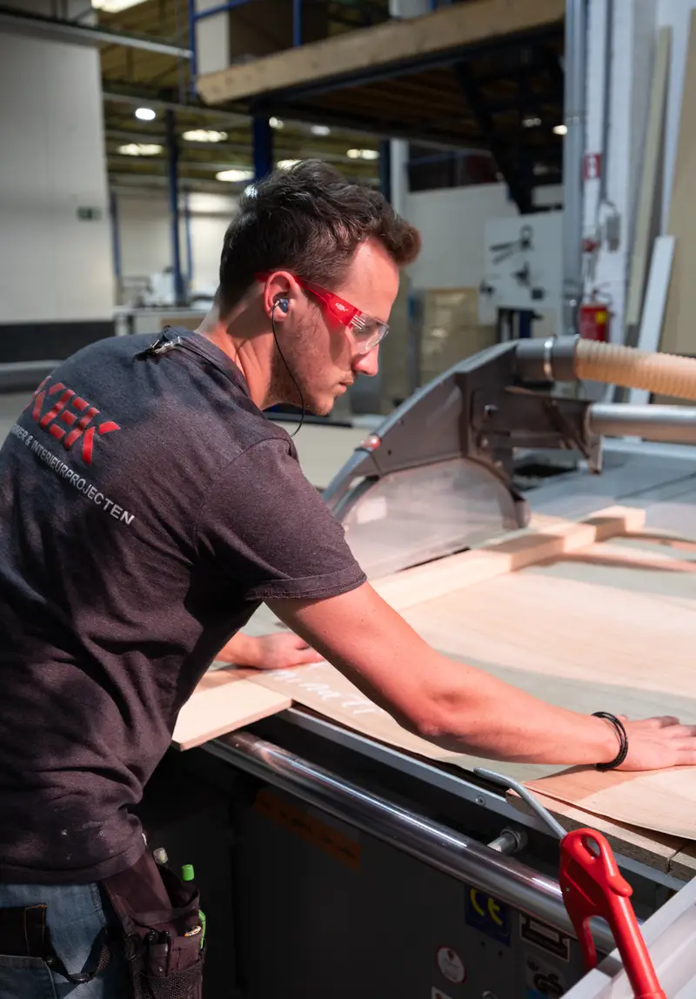
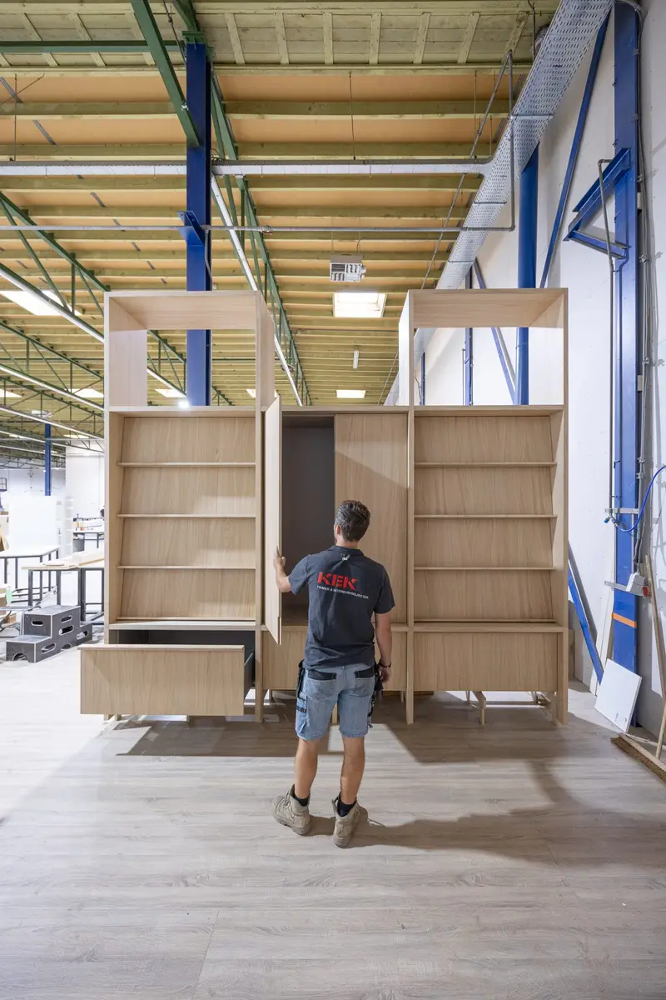

Afspraak is afspraak
Zeggen wat je doet en doen wat je zegt. Wijzigingen leggen we vast, zodat iedereen weet waar hij aan toe is.
Interieurbouw en afbouw uit Den Bosch, sinds 2000

Wat begon als een klein klusbedrijf is uitgegroeid tot een interieurbouwbedrijf met een vaste klantenkring en een warme, nuchtere Brabantse cultuur.
Eric Kuiper begon in 2000 als zelfstandig ondernemer met Klusbedrijf Eric Kuiper. Samen met zijn vrouw en kinderen maakte hij er een echt familiebedrijf van. Onze medewerkers zijn meer dan collega's: zonder hun inzet waren we nooit zo ver gekomen.
Eric Kuiper begint Klusbedrijf Eric Kuiper.
7200 m² productie, 500 m² showroom en 1500 m² kantoor.
Rick en Kevin Kuiper worden mede-eigenaar.
Gevierd met een open dag en een jubileumfeest.
Zeggen wat je doet en doen wat je zegt. Wijzigingen leggen we vast, zodat iedereen weet waar hij aan toe is.
Van een los meubelstuk tot een compleet pand: elk project maken we op maat, in onze eigen werkplaats.
Elektrische bussen, zonne-energie, gescheiden afval en hergebruik van materialen waar het kan.
Een familiebedrijf met een vrijdagmiddagborrel, vers fruit, een goede lunch en een hecht team.


Onze nesting cell met automatisch platenmagazijn is gekoppeld aan imos en B-NEST. Rond de 80 procent van de panelen komt daardoor direct klaar voor de kantenlijmer.
Een los meubel of een compleet pand: we komen langs, meten op en sturen je een offerte op maat.